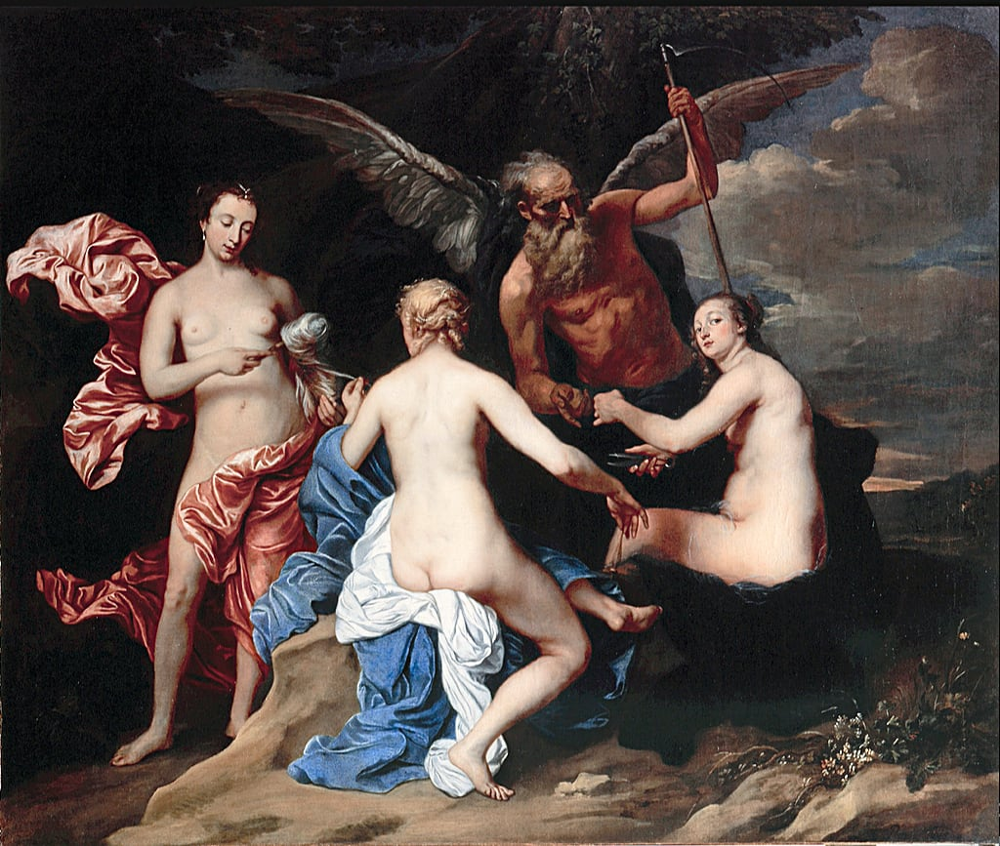
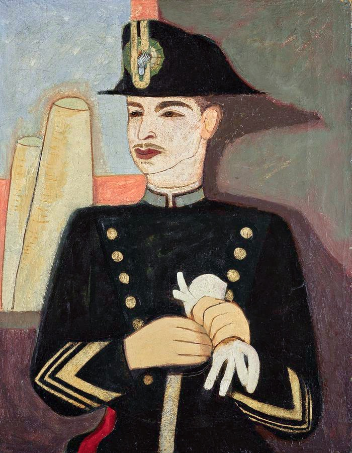
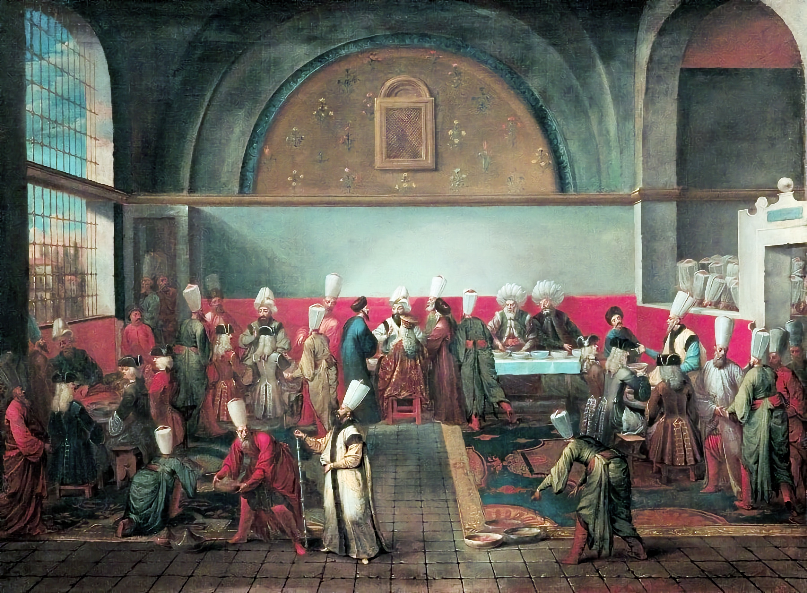
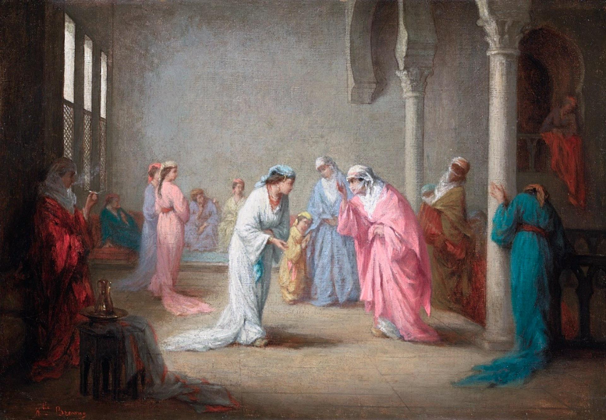
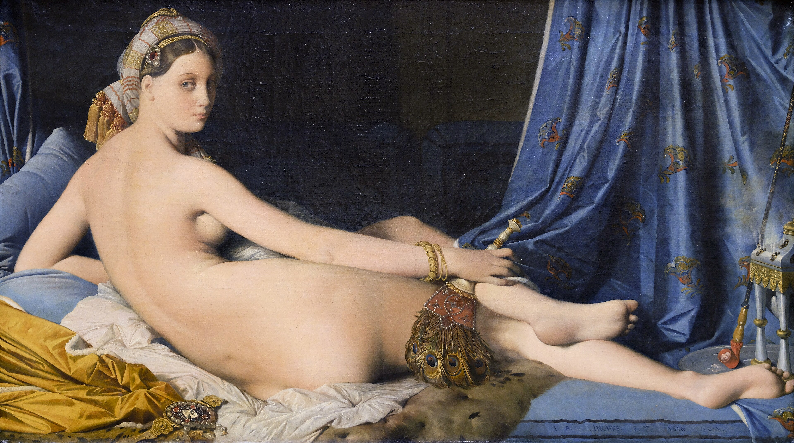
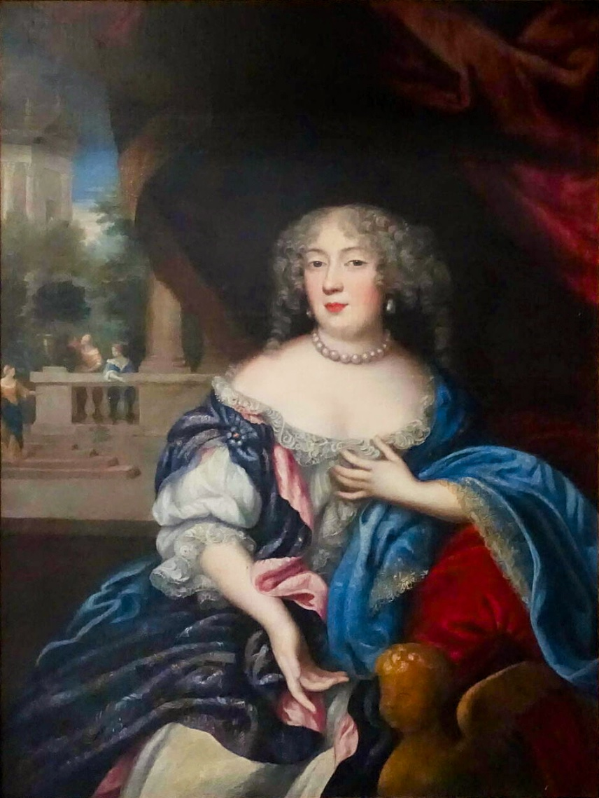
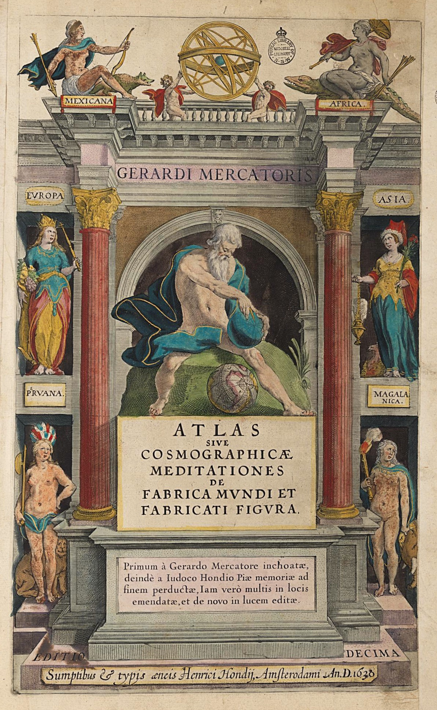
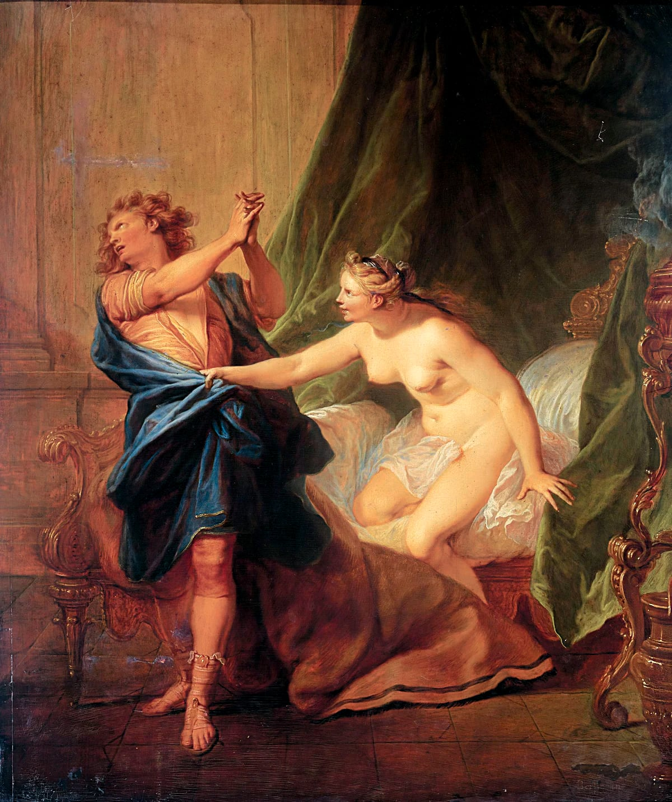

Canto V

| Some selections from Canto V | ||
|---|---|---|
| The wind off the Euxine; autumn’s bleak beginning and the Parcae; shivering slaves of every nation in the market; Juan jaded but "serene in carriage"; Johnson introduced | A crowd of shivering slaves of every nation / And age and sex were in the market ranged. | V–IX |
| Baba buys Juan and Johnson; digressions on slavery and digestion: the slave-merchant’s dinner and troubled conscience; Alexander and eating. | ’Tis pleasant purchasing our fellow creatures, / And all are to be sold, if you consider / Their passions. | XXVI–XXXII |
| Baba leads to the innner apartments of the seraglio; a cupboard of Ottoman clothes; Baba proposes circumcision; Juan refuses the offered female garments | ’Old gentleman, I’m not a lady.’ | LXIV–LXXIII |
| More lavish but tasteless apartments; Gulbeyaz rises "as Venus rose with from the wave"; Mary Queen of Scots; Ninon de l’Enclos; Diana’s chorus; nil admirari | As Venus rose with from the wave, on them / Bent like an antelope a Paphian pair of eyes. | XCIII–CII |
| Gulbeyaz "rather ordered than was granting"; poniard at her girdle; "Legitimacy" (Congress of Vienna); "Christian, canst thou love?" — Juan bursts into tears. | ’Christian, canst thou love?’ / Conceived that phrase was quite enough to move. | CIX–CXVII |
| Gulbeyaz’ rage: she throws herself on his breast; Juan declines; Gulbeyaz’s fury; Seneca’s Medea; Hotspur and Lear ("kill, kill, kill"); rage dissolves into shame | ’The prisoned eagle will not pair, nor I / Serve a sultana’s sensual phantasy.’ | CXVIII–CXXXII |
| Sultan arrives; satirical portrait; envoi ; bowstrung brother; Suleiman the Magnificent; Homer nods ; finished Ravenna, Nov. 1820. | ’I see you’ve bought another girl; ’tis pity / That a mere Christian should be half so pretty.’ | CXLV–CLX |
When amatory poets sing their loves
In liquid lines mellifluously bland,
And pair their rhymes as Venus yokes her doves,
They little think what mischief is in hand.
The greater their success the worse it proves,
As Ovid's verse may give to understand.
Even Petrarch's self, if judged with due severity,
Is the Platonic pimp of all posterity.
I therefore do denounce all amorous writing,
Except in such a way as not to attract;
Plain, simple, short, and by no means inviting,
But with a moral to each error tacked,
Formed rather for instructing than delighting,
And with all passions in their turn attacked.
Now if my Pegasus should not be shod ill,
This poem will become a moral model.
The European with the Asian shore
Sprinkled with palaces, the ocean stream
Here and there studded with a seventy-four,
Sophia's cupola with golden gleam,
The cypress groves, Olympus high and hoar,
The twelve isles, and the more than I could dream,
Far less describe, present the very view
Which charmed the charming Mary Montagu.
I have a passion for the name of Mary,
For once it was a magic sound to me,
And still it half calls up the realms of fairy,
Where I beheld what never was to be;
All feelings changed, but this was last to vary,
A spell from which even yet I am not quite free.
But I grow sad and let a tale grow cold,
Which must not be pathetically told.
The wind swept down the Euxine, and the wave
Broke foaming o'er the blue Symplegades.
'Tis a grand sight from off the Giant's Grave
To watch the progress of those rolling seas
Between the Bosphorus, as they lash and lave
Europe and Asia, you being quite at ease.
There's not a sea the passenger e'er pukes in,
Turns up more dangerous breakers than the Euxine.
'Twas a raw day of autumn's bleak beginning,
When nights are equal, but not so the days.
The Parcae then cut short the further spinning
Of seamen's fates, and the loud tempests raise
The waters, and repentance for past sinning
In all who o'er the great deep take their ways.
They vow to amend their lives, and yet they don't,
Because if drowned, they can't - if spared, they won't.

A crowd of shivering slaves of every nation
And age and sex were in the market ranged,
Each bevy with the merchant in his station.
Poor creatures! Their good looks were sadly changed.
All save the blacks seemed jaded with vexation,
From friends and home and freedom far estranged;
The Negroes more philosophy displayed,
Used to it, no doubt, as eels are to be flayed.
Juan was juvenile, and thus was full,
As most at his age are, of hope and health;
Yet I must own, he looked a little dull,
And now and then a tear stole down by stealth.
Perhaps his recent loss of blood might pull
His spirit down; and then the loss of wealth,
A mistress, and such comfortable quarters,
To be put up for auction amongst Tartars,
Were things to shake a stoic; ne'ertheless,
Upon the whole his carriage was serene.
His figure and the splendour of his dress,
Of which some gilded remnants still were seen,
Drew all eyes on him, giving them to guess
He was above the vulgar by his mien,
And then, though pale, he was so very handsome.
And then - they calculated on his ransom.
Like a backgammon board the place was dotted
With whites and blacks in groups on show for sale,
Though rather more irregularly spotted;
Some bought the jet, while others chose the pale.
It chanced amongst the other people lotted,
A man of thirty, rather stout and hale,
With resolution in his dark grey eye,
Next Juan stood, till some might choose to buy.
He had an English look; that is, was square
In make, of a complexion white and ruddy,
Good teeth, with curling rather dark brown hair,
And, it might be from thought or toil or study,
An open brow a little marked with care.
One arm had on a bandage rather bloody;
And there he stood with such sang-froid that greater
Could scarce be shown even by a mere spectator.
But seeing at his elbow a mere lad,
Of a high spirit evidently, though
At present weighed down by a doom which had
O'erthrown even men, he soon began to show
A kind of blunt compassion for the sad
Lot of so young a partner in the woe,
Which for himself he seemed to deem no worse
Than any other scrape, a thing of course.
'My boy, ' said he, 'amidst this motley crew
Of Georgians, Russians, Nubians, and what not,
All ragamuffins differing but in hue,
With whom it is our luck to cast our lot,
The only gentlemen seem I and you,
So let us be acquainted, as we ought.
If I could yield you any consolation,
'Twould give me pleasure. Pray, what is your nation?'
When Juan answered, 'Spanish, ' he replied,
'I thought in fact you could not be a Greek;
Those servile dogs are not so proudly eyed.
Fortune has played you here a pretty freak,
But that's her way with all men till they're tried;
But never mind, she'll turn, perhaps, next week.
She has served me also much the same as you,
Except that I have found it nothing new.'
'Pray, sir, ' said Juan, 'if I may presume,
What brought you here?' 'Oh nothing very rare.
Six Tartars and a drag-chain.' 'To this doom
But what conducted, if the question's fair,
Is that which I would learn.' 'I served for some
Months with the Russian army here and there
And taking lately, by Suwarrow's bidding,
A town, was ta'en myself instead of Widdin.'
'Have you no friends?' 'I had, but by God's blessing,
Have not been troubled with them lately. Now
I have answered all your questions without pressing,
And you an equal courtesy should show.'
'Alas, ' said Juan, ''twere a tale distressing,
And long besides.' 'Oh if 'tis really so,
You're right on both accounts to hold your tongue;
A sad tale saddens doubly when 'tis long.
'But droop not; Fortune at your time of life,
Although a female moderately fickle,
Will hardly leave you (as she's not your wife)
For any length of days in such a pickle.
To strive too with our fate were such a strife
As if the corn-sheaf should oppose the sickle.
Men are the sport of circumstances, when
The circumstances seem the sport of men.'
' 'Tis not, ' said Juan, 'for my present doom
I mourn, but for the past; I loved a maid.'
He paused, and his dark eye grew full of gloom;
A single tear upon his eyelash stayed
A moment and then dropped. 'But to resume,
'Tis not my present lot, as I have said,
Which I deplore so much; for I have borne
Hardships which have the hardiest overworn
'On the rough deep. But this last blow -'and here
He stopped again and turned away his face.
'Ay, ' quoth his friend, 'I thought it would appear
That there had been a lady in the case;
And these are things which ask a tender tear,
Such as I too would shed if in your place.
I cried upon my first wife's dying day,
And also when my second ran away.
'My third -' ' Your third!' quoth Juan, turning round,
'You scarcely can be thirty, have you three?'
' No, only two at present above ground.
Surely 'tis nothing wonderful to see
One person thrice in holy wedlock bound.'
'Well then your third, ' said Juan, 'what did she?
She did not run away too, did she, sir?'
'No, faith.' 'What then?' 'I ran away from her.'
' You take things coolly, sir, ' said Juan. 'Why, '
Replied the other, 'what can a man do?
There still are many rainbows in your sky,
But mine have vanished. All, when life is new,
Commence with feelings warm and prospects high;
But time strips our illusions of their hue,
And one by one in turn, some grand mistake
Casts off its bright skin yearly like the snake.
”Tis true, it gets another bright and fresh,
Or fresher, brighter; but the year gone through,
This skin must go the way too of all flesh
Or sometimes only wear a week or two.
Love's the first net which spreads its deadly mesh;
Ambition, avarice, vengeance, glory glue
The glittering lime-twigs of our latter days,
Where still we flutter on for pence or praise.'
'All this is very fine and may be true, '
Said Juan, 'but I really don't see how
It betters present times with me or you.'
'No?' quoth the other, 'yet you will allow
By setting things in their right point of view,
Knowledge at least is gained; for instance, now
We know what slavery is, and our disasters
May teach us better to behave when masters.'
'Would we were masters now, if but to try
Their present lessons on our pagan friends here, '
Said Juan, swallowing a heart-burning sigh.
'Heaven help the scholar whom his fortune sends here!'
'Perhaps we shall be one day, by and by, '
Rejoined the other, 'when our bad luck mends here.
Meantime (yon old black eunuch seems to eye us)
I wish to God that somebody would buy us.
'But after all what is our present state?
'Tis bad and may be better - all men's lot.
Most men are slaves, none more so than the great,
To their own whims and passions and what not.
Society itself, which should create
Kindness, destroys what little we had got.
To feel for none is the true social art
Of the world's stoics - men without a heart.'
Just now a black old neutral personage
Of the third sex stepped up and peering over
The captives, seemed to mark their looks and age
And capabilities, as to discover
If they were fitted for the purposed cage.
No lady e'er is ogled by a lover,
Horse by a blackleg, broadcloth by a tailor,
Fee by a counsel, felon by a jailor,
As is a slave by his intended bidder.
'Tis pleasant purchasing our fellow creatures,
And all are to be sold, if you consider
Their passions and are dextrous. Some by features
Are bought up, others by a warlike leader,
Some by a place, as tend their years or natures,
The most by ready cash; but all have prices
From crowns to kicks according to their vices.
The eunuch, having eyed them o'er with care,
Turned to the merchant and begun to bid,
First but for one, and after for the pair.
They haggled, wrangled, swore too - so they did!
As though they were in a mere Christian fair
Cheapening an ox, an ass, a lamb, or kid
So that their bargain sounded like a battle
For this superior yoke of human cattle.
At last they settled into simple grumbling
And pulling out reluctant purses and
Turning each piece of silver o'er and tumbling
Some down and weighing others in their hand,
And by mistake sequins with paras jumbling,
Until the sum was accurately scanned,
And then the merchant giving change and signing
Receipts in full, began to think of dining.
I wonder if his appetite was good
Or if it were, if also his digestion.
Methinks at meals some odd thoughts might intrude,
And conscience ask a curious sort of question
About the right divine how far we should
Sell flesh and blood. When dinner has opprest one,
I think it is perhaps the gloomiest hour
Which turns up out of the sad twenty-four.

Voltaire says 'No'; he tells you that Candide
Found life most tolerable after meals.
He's wrong; unless man were a pig, indeed,
Repletion rather adds to what he feels,
Unless he's drunk, and then no doubt he's freed
From his own brain's oppression while it reels.
Of food I think with Philip's son, or rather
Ammon's (ill pleased with one world and one father);
I think with Alexander that the act
Of eating, with another act or two,
Makes us feel our mortality in fact
Redoubled. When a roast and a ragout
And fish and soup, by some side dishes backed,
Can give us either pain or pleasure, who
Would pique himself on intellects, whose use
Depends so much upon the gastric juice?
The other evening ('twas on Friday last) -
This is a fact and no poetic fable -
Just as my greatcoat was about me cast,
My hat and gloves still lying on the table,
I heard a shot - 'twas eight o'clock scarce past -
And running out as fast as I was able,
I found the military commandant
Stretched in the street and able scarce to pant.

Poor fellow! For some reason, surely bad,
They had slain him with five slugs and left him there
To perish on the pavement; so I had
Him borne into the house and up the stair
And stripped and looked to. But why should I add
More circumstances? Vain was every care;
The man was gone; in some Italian quarrel
Killed by five bullets from an old gun barrel.
I gazed upon him, for I knew him well;
And though I have seen many corpses, never
Saw one, whom such an accident befell,
So calm. Though pierced through stomach, heart, and liver,
He seemed to sleep, for you could scarcely tell
(As he bled inwardly, no hideous river
Of gore divulged the cause) that he was dead;
So as I gazed on him, I thought or said,
'Can this be death? Then what is life or death?
Speak!' but he spoke not. 'Wake!' but still he slept.
'But yesterday and who had mightier breath?
A thousand warriors by his word were kept
In awe. He said as the centurion saith,
"Go,"and he goeth; "come, " and forth he stepped.
The trump and bugle till he spake were dumb,
And now nought left him but the muffled drum.'
And they who waited once and worshipped, they
With their rough faces thronged about the bed
To gaze once more on the commanding clay,
Which for the last though not the first time bled.
And such an end! That he who many a day
Had faced Napoleon's foes until they fled,
The foremost in the charge or in the sally,
Should now be butchered in a civic alley.
The scars of his old wounds were near his new,
Those honourable scars which brought him fame;
And horrid was the contrast to the view.
But let me quit the theme; as such things claim
Perhaps even more attention than is due
From me. I gazed (as oft I have gazed the same)
To try if I could wrench aught out of death
Which should confirm or shake or make a faith;
But it was all a mystery. Here we are,
And there we go, but where? Five bits of lead,
Or three or two or one send very far!
And is this blood then formed but to be shed?
Can every element our elements mar?
And air - earth - water - fire live - and we dead?
We, whose minds comprehend all things? No more;
But let us to the story as before.
The purchaser of Juan and acquaintance
Bore off his bargains to a gilded boat,
Embarked himself and them, and off they went thence
As fast as oars could pull and water float.
They looked like persons being led to sentence,
Wondering what next, till the caque was brought
Up in a little creek below a wall
O'ertopped with cypresses dark green and tall.
Here their conductor tapping at the wicket
Of a small iron door, 'twas opened, and
He led them onward, first through a low thicket
Flanked by large groves, which towered on either hand.
They almost lost their way and had to pick it,
For night was closing ere they came to land.
The eunuch made a sign to those on board,
Who rowed off, leaving them without a word.
As they were plodding on their winding way
Through orange bowers and jasmine and so forth
(Of which I might have a good deal to say,
There being no such profusion in the North
Of oriental plants et cetera,
But that of late your scribblers think it worth
Their while to rear whole hotbeds in their works
Because one poet travelled 'mongst the Turks) –
As they were threading on their way, there came
Into Don Juan's head a thought, which he
Whispered to his companion. 'Twas the same
Which might have then occurred to you or me.
'Methinks, ' said he, 'it would be no great shame
If we should strike a stroke to set us free.
Let's knock that old black fellow on the head
And march away. 'Twere easier done than said.'
'Yes, ' said the other, 'and when done, what then?
How get out? How the devil got we in?
And when we once were fairly out, and when
From Saint Bartholomew we have saved our skin,
Tomorrow'd see us in some other den
And worse off than we hitherto have been.
Besides, I'm hungry and just now would take,
Like Esau, for my birthright a beefsteak.
'We must be near some place of man's abode,
For the old Negro's confidence in creeping
With his two captives by so queer a road
Shows that he thinks his friends have not been sleeping.
A single cry would bring them all abroad.
'Tis therefore better looking before leaping,
And there, you see, this turn has brought us through.
By Jove, a noble palace - lighted too.'
It was indeed a wide extensive building
Which opened on their view, and o'er the front
There seemed to be besprent a deal of gilding
And various hues, as is the Turkish wont,
A gaudy taste, for they are little skilled in
The arts of which these lands were once the font.
Each villa on the Bosphorus looks a screen
New painted or a pretty opera scene.
And nearer as they came, a genial savour
Of certain stews and roast meats and pilaus,
Things which in hungry mortals' eyes find favour,
Made Juan in his harsh intentions pause
And put himself upon his good behaviour.
His friend too, adding a new saving clause,
Said, 'In heaven's name let's get some supper now,
And then I'm with you, if you're for a row.'
Some talk of an appeal unto some passion,
Some to men's feelings, others to their reason.
The last of these was never much the fashion,
For reason thinks all reasoning out of season.
Some speakers whine, and others lay the lash on,
But more or less continue still to tease on,
With arguments according to their forte,
But no one ever dreams of being short.
But I digress; of all appeals - although
I grant the power of pathos and of gold,
Of beauty, flattery, threats, a shilling - no
Method's more sure at moments to take hold
Of the best feelings of mankind, which grow
More tender as we everyday behold,
Than that all-softening, overpowering knell,
The tocsin of the soul - the dinner bell.
Turkey contains no bells, and yet men dine.
And Juan and his friend, albeit they heard
No Christian knoll to table, saw no line
Of lackeys usher to the feast prepared,
Yet smelt roast meat, beheld a huge fire shine,
And cooks in motion with their clean arms bared,
And gazed around them to the left and right
With the prophetic eye of appetite.
And giving up all notions of resistance,
They followed close behind their sable guide,
Who little thought that his own cracked existence
Was on the point of being set aside.
He motioned them to stop at some small distance,
And knocking at the gate, 'twas opened wide,
And a magnificent large hall displayed
The Asian pomp of Ottoman parade.
I won't describe; description is my forte,
But every fool describes in these bright days
His wondrous journey to some foreign court
And spawns his quarto and demands your praise.
Death to his publisher, to him 'tis sport,
While Nature, tortured twenty thousand ways,
Resigns herself with exemplary patience
To guidebooks, rhymes, tours, sketches, illustrations.
Along this hall and up and down, some, squatted
Upon their hams, were occupied at chess,
Others in monosyllable talk chatted,
And some seemed much in love with their own dress,
And divers smoked superb pipes decorated
With amber mouths of greater price or less,
And several strutted, others slept, and some
Prepared for supper with a glass of rum.

As the black eunuch entered with his brace
Of purchased infidels, some raised their eyes
A moment without slackening from their pace,
But those who sate ne'er stirred in anywise.
One or two stared the captives in the face,
Just as one views a horse to guess his price;
Some nodded to the Negro from their station,
But no one troubled him with conversation.
He leads them through the hall, and without stopping
On through a farther range of goodly rooms,
Splendid but silent, save in one, where, dropping,
A marble fountain echoes through the glooms
Of night, which robe the chamber, or where popping,
Some female head most curiously presumes
To thrust its black eyes through the door or lattice,
As wondering what the devil noise that is.
Some faint lamps gleaming from the lofty walls
Gave light enough to hint their farther way,
But not enough to show the imperial halls
In all the flashing of their full array.
Perhaps there's nothing - I'll not say appals,
But saddens more by night as well as day
Than an enormous room without a soul
To break the lifeless splendour of the whole.
Two or three seem so little, one seems nothing.
In deserts, forests, crowds, or by the shore,
There solitude, we know, has her full growth in
The spots which were her realms forevermore;
But in a mighty hall or gallery, both in
More modern buildings and those built of yore,
A kind of death comes o'er us all alone,
Seeing what's meant for many with but one.
A neat, snug study on a winter's night,
A book, friend, single lady, or a glass
Of claret, sandwich, and an appetite
Are things which make an English evening pass,
Though certes by no means so grand a sight
As is a theatre lit up by gas.
I pass my evenings in long galleries solely,
And that's the reason I'm so melancholy.
Alas, man makes that great which makes him little.
I grant you in a church 'tis very well;
What speaks of Heaven should by no means be brittle,
But strong and lasting, till no tongue can tell
Their names who reared it, but huge houses fit ill -
And huge tombs worse - mankind, since Adam fell.
Methinks the story of the tower of Babel
Might teach them this much better than I'm able.
Babel was Nimrod's hunting box, and then
A town of gardens, walls, and wealth amazing,
Where Nabuchadonosor, king of men,
Reigned, till one summer's day he took to grazing,
And Daniel tamed the lions in their den,
The people's awe and admiration raising.
'Twas famous too for Thisbe and for Pyramus
And the calumniated Queen Semiramis.
That injured queen, by chroniclers so coarse,
Has been accused (I doubt not by conspiracy)
Of an improper friendship for her horse
(Love like religion sometimes runs to heresy).
This monstrous tale had probably its source
(For such exaggerations here and there I see)
In writing 'courser' by mistake for 'courier'.
I wish the case could come before a jury here.
But to resume. Should there be (what may not
Be in these days?) some infidels, who don't,
Because they can't, find out the very spot
Of that same Babel, or because they won't
(Though Claudius Rich, Esquire, some bricks has got
And written lately two memoirs upon't)
Believe the Jews, those unbelievers, who
Must be believed, though they believe not you.
Yet let them think that Horace has exprest
Shortly and sweetly the masonic folly
Of those, forgetting the great place of rest,
Who give themselves to architecture wholly.
We know where things and men must end at best,
A moral (like all morals) melancholy,
And et sepulcri immemor struis domos
Shows that we build when we should but entomb us.
At last they reached a quarter most retired,
Where echo woke as if from a long slumber.
Though full of all things which could be desired,
One wondered what to do with such a number
Of articles which nobody required.
Here wealth had done its utmost to encumber
With furniture an exquisite apartment,
Which puzzled Nature much to know what art meant.
It seemed, however, but to open on
A range or suite of further chambers, which
Might lead to heaven knows where, but in this one
The moveables were prodigally rich:
Sofas 'twas half a sin to sit upon,
So costly were they; carpets every stitch
Of workmanship so rare, they made you wish
You could glide o'er them like a golden fish.
The black, however, without hardly deigning
A glance at that which wrapt the slaves in wonder,
Trampled what they scarce trod for fear of staining,
As if the milky way their feet was under
With all its stars; and with a stretch attaining
A certain press or cupboard niched in yonder
In that remote recess, which you may see,
Or if you don't the fault is not in me -
I wish to be perspicuous. And the black,
I say, unlocking the recess, pulled forth
A quantity of clothes fit for the back
Of any Mussulman, whate'er his worth,
And of variety there was no lack,
And yet though I have said there was no dearth,
He chose himself to point out what he thought
Most proper for the Christians he had bought.
The suit he thought most suitable to each
Was, for the elder and the stouter, first
A candiote cloak, which to the knee might reach,
And trousers not so tight that they would burst,
But such as fit an Asiatic breech,
A shawl, whose folds in Cahmere had been nurst,
Slippers of saffron, dagger rich and handy;
In short, all things which form a Turkish dandy.
While he was dressing, Baba, their black friend,
Hinted the vast advantages which they
Might probably obtain both in the end,
If they would but pursue the proper way
Which Fortune plainly seemed to recommend;
And then he added that he needs must say
'Twould greatly tend to better their condition,
If they would condescend to circumcision.
For his own part, he really should rejoice
To see them true believers, but no less
Would leave his proposition to their choice.
The other, thanking him for this excess
Of goodness, in thus leaving them a voice
In such a trifle, scarcely could express
Sufficiently (he said) his approbation
Of all the customs of this polished nation.
For his own share, he saw but small objection
To so respectable an ancient rite;
And after swallowing down a slight refection,
For which he owned a present appetite,
He doubted not a few hours of reflection
Would reconcile him to the business quite.
'Will it?' said Juan sharply, 'Strike me dead
But they as soon shall circumcise my head!
'Cut off a thousand heads, before - ' 'Now, pray, '
Replied the other, 'do not interrupt
You put me out in what I had to say.
Sir, as I said, as soon as I have supt,
I shall perpend if your proposal may
Be such as I can properly accept,
Provided always your great goodness still
Remits the matter to our own free will.'
Baba eyed Juan and said, 'Be so good
As dress yourself and pointed out a suit
In which a princess with great pleasure would
Array her limbs; but Juan standing mute,
As not being in a masquerading mood,
Gave it a slight kick with his Christian foot,
And when the old Negro told him to 'Get ready,'
Replied, 'Old gentleman, I'm not a lady.'

'What you may be, I neither know nor care, '
Said Baba, 'but pray do as I desire;
I have no more time nor many words to spare.'
'At least, ' said Juan, 'sure I may inquire
The cause of this odd travesty.' 'Forbear, '
Said Baba, 'to be curious. Twill transpire
No doubt in proper place and time and season;
I have no authority to tell the reason.'
'Then if I do, ' said Juan, 'I'll be - ' 'Hold!'
Rejoined the Negro, 'pray be not provoking;
This spirit's well, but it may wax too bold,
And you will find us not too fond of joking.'
'What, sir, ' said Juan, 'shall it e'er be told
That I unsexed my dress?' But Baba, stroking
The things down, said, ' Incense me and I call
Those who will leave you of no sex at all.
'I offer you a handsome suit of clothes,
A woman's, true, but then there is a cause
Why you should wear them.' 'What, though my soul loathes
The effeminate garb?' Thus after a short pause,
Sighed Juan, muttering also some slight oaths,
'What the devil shall I do with all this gauze?'
Thus he profanely termed the finest lace
Which e'er set off a marriage-morning face.
And then he swore, and sighing, on he slipped
A pair of trousers of flesh-coloured silk;
Next with a virgin zone he was equipped,
Which girt a slight chemise as white as milk.
But tugging on his petticoat he tripped,
Which, as we say, or as the Scotch say, whilk
(The rhyme obliges me to this; sometimes
Monarchs are less imperative than rhymes) -
Whilk, which (or what you please) was owing to
His garment's novelty, and his being awkward;
And yet at last he managed to get through
His toilet, though no doubt a little backward.
The Negro Baba helped a little too,
When some untoward part of raiment stuck hard;
And wrestling both his arms into a gown,
He paused and took a survey up and down.
One difficulty still remained; his hair
Was hardly long enough, but Baba found
So many false long tresses all to spare
That soon his head was most completely crowned,
After the manner then in fashion there.
And this addition with such gems was bound
As suited the ensemble of his toilet,
While Baba made him comb his head and oil it.
And now being femininely all arrayed,
With some small aid from scissors, paint, and tweezers,
He looked in almost all respects a maid,
And Baba smilingly exclaimed, 'You see, sirs,
A perfect transformation here displayed.
And now then, you must come along with me, sirs,
That is, the lady.' Clapping his hands twice,
Four blacks were at his elbow in a trice.
'You, sir, ' said Baba, nodding to the one,
'Will please to accompany those gentlemen
To supper; but you, worthy Christian nun,
Will follow me. No trifling, sir, for when
I say a thing, it must at once be done.
What fear you? Think you this a lion's den?
Why, 'tis a palace, where the truly wise
Anticipate the Prophet's paradise.
'You fool! I tell you no one means you harm.'
'So much the better, ' Juan said, 'for them;
Else they shall feel the weight of this my arm,
Which is not quite so light as you may deem.
I yield thus far, but soon will break the charm
If any take me for that which I seem,
So that I trust for everybody's sake
That this disguise may lead to no mistake.'
'Blockhead! come on and see, ' quoth Baba, while
Don Juan, turning to his comrade, who
Though somewhat grieved, could scarce forbear a smile
Upon the metamorphosis in view.
'Farewell!' they mutually exclaimed. 'This soil
Seems fertile in adventures strange and new;
One's turned half Mussulman, and one a maid,
By this old black enchanter's unsought aid.'
'Farewell, ' said Juan, 'should we meet no more,
I wish you a good appetite.' 'Farewell, '
Replied the other, 'though it grieves me sore.
When we next meet, we'll have a tale to tell.
We needs must follow when Fate puts from shore.
Keep your good name, though Eve herself once fell.'
'Nay, ' quoth the maid, 'the Sultan's self shan't carry me,
Unless His Highness promises to marry me.'
And thus they parted, each by separate doors.
Baba led Juan onward room by room
Through glittering galleries and o'er marble floors,
Till a gigantic portal through the gloom,
Haughty and huge, along the distance lowers;
And wafted far arose a rich perfume.
It seemed as though they came upon a shrine,
For all was vast, still, fragrant, and divine.
The giant door was broad and bright and high,
Of gilded bronze and carved in curious guise.
Warriors thereon were battling furiously;
Here stalks the victor, there the vanquished lies;
There captives led in triumph droop the eye;
And in perspective many a squadron flies.
It seems the work of times before the line
Of Rome transplanted fell with Constantine.
This massy portal stood at the wide close
Of a huge hall, and on its either side
Two little dwarfs, the least you could suppose,
Were sate like ugly imps, as if allied
In mockery to the enormous gate which rose
O'er them in almost pyramidic pride.
The gate so splendid was in all its features,
You never thought about those little creatures,
Until you nearly trod on them, and then
You started back in horror to survey
The wondrous hideousness of those small men,
Whose colour was not black nor white nor grey,
But an extraneous mixture, which no pen
Can trace, although perhaps the pencil may.
They were misshapen pygmies, deaf and dumb
Monsters, who cost a no less monstrous sum.
Their duty was - for they were strong and though
They looked so little, did strong things at times -
To ope this door, which they could really do
(The hinges being as smooth as Rogers' rhymes),
And now and then with tough strings of the bow,
As is the custom of those eastern climes,
To give some rebel pasha a cravat,
For mutes are generally used for that.
They spoke by signs, that is, not spoke at all,
And looking like two incubi, they glared
As Baba with his fingers made them fall
To heaving back the portal folds. It scared
Juan a moment, as this pair so small,
With shrinking serpent optics on him stared;
It was as if their little looks could poison
Or fascinate whome'er they fixed their eyes on.
Before they entered, Baba paused to hint
To Juan some slight lessons as his guide.
'If you could just contrive, ' he said, 'to stint
That somewhat manly majesty of stride,
'Twould be as well, and (though there's not much in't)
To swing a little less from side to side,
Which has at times an aspect of the oddest;
And also could you look a little modest,
”Twould be convenient, for these mutes have eyes
Like needles, which may pierce those petticoats;
And if they should discover your disguise,
You know how near us the deep Bosphorus floats,
And you and I may chance ere morning rise,
To find our way to Marmora without boats,
Stitched up in sacks, a mode of navigation
A good deal practised here upon occasion.'
With this encouragement, he led the way
Into a room still nobler than the last.
A rich confusion formed a disarray
In such sort that the eye along it cast
Could hardly carry anything away -
Object on object flashed so bright and fast,
A dazzling mass of gems and gold and glitter,
Magnificently mingled in a litter.
Wealth had done wonders, taste not much. Such things
Occur in orient palaces and even
In the more chastened domes of western kings
(Of which I have also seen some six or seven),
Where I can't say or gold or diamond flings
Great lustre. There is much to be forgiven:
Groups of bad statues, tables, chairs, and pictures,
On which I cannot pause to make my strictures.
In this imperial hall at distance lay
Under a canopy and there reclined
Quite in a confidential queenly way,
A lady. Baba stopped and kneeling signed
To Juan, who though not much used to pray,
Knelt down by instinct, wondering in his mind
What all this meant, while Baba bowed and bended
His head, until the ceremony ended.

The lady, rising up with such an air
As Venus rose with from the wave, on them
Bent like an antelope a Paphian pair
Of eyes, which put out each surrounding gem,
And raising up an arm, as moonlight fair,
She signed to Baba, who first kissed the hem
Of her deep purple robe, and speaking low,
Pointed to Juan, who remained below.

Her presence was as lofty as her state;
Her beauty of that overpowering kind,
Whose force description only would abate.
I'd rather leave it much to your own mind
Than lessen it by what I could relate
Of forms and features. It would strike you blind
Could I do justice to the full detail;
So, luckily for both, my phrases fail.
This much however I may add: her years
Were ripe, they might make six and twenty springs,
But there are forms which Time to touch forbears
And turns aside his scythe to vulgar things,
Such as was Marys, Queen of Scots. True, tears
And love destroy, and sapping sorrow wrings
Charms from the charmer, yet some never grow
Ugly, for instance, Ninon de l'Enclos.
She spake some words to her attendants, who
Composed a choir of girls, ten or a dozen,
And were all clad alike; like Juan too,
Who wore their uniform, by Baba chosen.
They formed a very nymph-like looking crew,
Which might have called Diana's chorus 'cousin',
As far as outward show may correspond;
I won't be bail for anything beyond.
They bowed obeisance and withdrew, retiring,
But not by the same door through which came in
Baba and Juan, which last stood admiring
At some small distance all he saw within
This strange saloon, much fitted for inspiring
Marvel and praise, for both or none things win.
And I must say, I ne'er could see the very
Great happiness of the nil admirari.
'Not to admire is all the art I know'
(Plain truth, dear Murray, needs few flowers of speech)
'To make men happy, or to keep them so'
(So take it in the very words of Creech).
Thus Horace wrote we all know long ago,
And thus Pope quotes the precept to re-teach
From his translation, but had none admired,
Would Pope have sung, or Horace been inspired?
Baba, when all the damsels were withdrawn,
Motioned to Juan to approach and then
A second time desired him to kneel down
And kiss the lady's foot, which maxim when
He heard repeated, Juan with a frown
Drew himself up to his full height again
And said it grieved him, but he could not stoop
To any shoe, unless it shod the Pope.

Baba, indignant at this ill-timed pride,
Made fierce remonstrances, and then a threat
He muttered (but the last was given aside)
About a bowstring - quite in vain. Not yet
Would Juan bend, though 'twere to Mahomet's bride.
There's nothing in the world like etiquette
In kingly chambers or imperial halls,
As also at the race and county balls.
He stood like Atlas, with a world of words
About his ears, and nathless would not bend.
The blood of all his line's Castilian lords
Boiled in his veins, and rather than descend
To stain his pedigree, a thousand swords
A thousand times of him had made an end.
At length perceiving the 'foot' could not stand,
Baba proposed that he should kiss the hand.
Here was an honourable compromise,
A halfway house of diplomatic rest,
Where they might meet in much more peaceful guise;
And Juan now his willingness exprest
To use all fit and proper courtesies,
Adding that this was commonest and best,
For through the South the custom still commands
The gentleman to kiss the lady's hands.
And he advanced, though with but a bad grace,
Though on more thoroughbred or fairer fingers
No lips e'er left their transitory trace.
On such as these the lip too fondly lingers
And for one kiss would fain imprint a brace,
As you will see, if she you love shall bring hers
In contact. And sometimes even a fair stranger's
An almost twelvemonth's constancy endangers.
The lady eyed him o'er and o'er and bade
Baba retire, which he obeyed in style,
As if well used to the retreating trade;
And taking hints in good part all the while,
He whispered Juan not to be afraid,
And looking on him with a sort of smile,
Took leave, with such a face of satisfaction,
As good men wear who have done a virtuous action.
When he was gone, there was a sudden change.
I know not what might be the lady's thought,
But o'er her bright brow flashed a tumult strange,
And into her clear cheek the blood was brought,
Blood-red as sunset summer clouds which range
The verge of heaven; and in her large eyes wrought
A mixture of sensations might be scanned,
Of half voluptuousness and half command.
Her form had all the softness of her sex,
Her features all the sweetness of the devil,
When he put on the cherub to perplex
Eve and paved (God knows how) the road to evil.
The sun himself was scarce more free from specks
Than she from aught at which the eye could cavil;
Yet somehow there was something somewhere wanting,
As if she rather ordered than was granting.
Something imperial or imperious threw
A chain o'er all she did; that is, a chain
Was thrown as 'twere about the neck of you.
And rapture's self will seem almost a pain
With aught which looks like despotism in view.
Our souls at least are free, and 'tis in vain
We would against them make the flesh obey;
The spirit in the end will have its way.
Her very smile was haughty, though so sweet;
Her very nod was not an inclination.
There was a self-will even in her small feet,
As though they were quite conscious of her station;
They trod as upon necks. And to complete
Her state (it is the custom of her nation),
A poniard decked her girdle, as the sign
She was a sultan's bride (thank heaven, not mine).
'To hear and to obey' had been from birth
The law of all around her; to fulfil
All phantasies which yielded joy or mirth
Had been her slaves' chief pleasure, as her will.
Her blood was high, her beauty scarce of earth;
Judge then if her caprices e'er stood still.
Had she but been a Christian, I've a notion
We should have found out the perpetual motion.
Whate'er she saw and coveted was brought;
Whate'er she did not see, if she supposed
It might be seen, with diligence was sought,
And when 'twas found straightway the bargain closed.
There was no end unto the things she bought,
Nor to the trouble which her fancies caused.
Yet even her tyranny had such a grace,
The women pardoned all except her face.
Juan, the latest of her whims, had caught
Her eye in passing on his way to sale.
She ordered him directly to be bought,
And Baba, who had ne'er been known to fail
In any kind of mischief to be wrought,
At all such auctions knew how to prevail.
She had no prudence, but he had; and this
Explains the garb which Juan took amiss.
His youth and features favoured the disguise,
And should you ask how she, a sultan's bride,
Could risk or compass such strange phantasies,
This I must leave sultanas to decide.
Emperors are only husbands in wives' eyes,
And kings and consorts oft are mystified,
As we may ascertain with due precision,
Some by experience, others by tradition.
But to the main point, where we have been tending.
She now conceived all difficulties past
And deemed herself extremely condescending
When, being made her property at last,
Without more preface, in her blue eyes blending
Passion and power, a glance on him she cast,
And merely saying, 'Christian, canst thou love?'
Conceived that phrase was quite enough to move.
And so it was, in proper time and place;
But Juan, who had still his mind o'erflowing
With Haide's isle and soft Ionian face,
Felt the warm blood, which in his face was glowing,
Rush back upon his heart, which filled apace,
And left his cheeks as pale as snowdrops blowing.
These words went through his soul like Arab spears,
So that he spoke not, but burst into tears.
She was a good deal shocked; not shocked at tears,
For women shed and use them at their liking.
But there is something when man's eye appears
Wet, still more disagreeable and striking.
A woman's teardrop melts, a man's half sears
Like molten lead, as if you thrust a pike in
His heart to force it out, for (to be shorter)
To them 'tis a relief, to us a torture.
And she would have consoled, but knew not how;
Having no equals, nothing which had e'er
Infected her with sympathy till now,
And never having dreamt what 'twas to bear
Aught of a serious sorrowing kind, although
There might arise some pouting petty care
To cross her brow, she wondered how so near
Her eyes another's eye could shed a tear.
But nature teaches more than power can spoil;
And when a strong although a strange sensation
Moves, female hearts are such a genial soil
For kinder feelings, whatsoe'er their nation,
They naturally pour the 'wine and oil',
Samaritans in every situation.
And thus Gulbeyaz, though she knew not why,
Felt an odd glistening moisture in her eye.
But tears must stop like all things else; and soon
Juan, who for an instant had been moved
To such a sorrow by the intrusive tone
Of one who dared to ask if he had loved,
Called back the stoic to his eyes, which shone
Bright with the very weakness he reproved.
And although sensitive to beauty, he
Felt most indignant still at not being free.
Gulbeyaz, for the first time in her days,
Was much embarrassed, never having met
In all her life with aught save prayers and praise;
And as she also risked her life to get
Him whom she meant to tutor in love's ways
Into a comfortable tête-à-tête,
To lose the hour would make her quite a martyr,
And they had wasted now almost a quarter.
I also would suggest the fitting time
To gentlemen in any such like case,
That is to say, in a meridian clime
(With us there is more law given to the chase),
But here a small delay forms a great crime.
So recollect that the extremest grace
Is just two minutes for your declaration;
A moment more would hurt your reputation.
Juan's was good and might have been still better,
But he had got Haidée into his head.
However strange, he could not yet forget her,
Which made him seem exceedingly ill-bred.
Gulbeyaz, who looked on him as her debtor
For having had him to her palace led,
Began to blush up to the eyes and then
Grow deadly pale and then blush back again.
At length, in an imperial way, she laid
Her hand on his and bending on him eyes,
Which needed not an empire to persuade,
Looked into his for love, where none replies.
Her brow grew black, but she would not upbraid,
That being the last thing a proud woman tries.
She rose and pausing one chaste moment, threw
Herself upon his breast, and there she grew.
This was an awkward test, as Juan found,
But he was steeled by sorrow, wrath, and pride.
With gentle force her white arms he unwound
And seated her all drooping by his side.
Then rising haughtily he glanced around
And looking coldly in her face, he cried,
'The prisoned eagle will not pair, nor I
Serve a sultana's sensual phantasy.
'Thou ask'st if I can love; be this the proof
How much I have loved - that I love not thee!
In this vile garb, the distaff, web, and woof
Were fitter for me. Love is for the free!
I am not dazzled by this splendid roof.
Whate'er thy power, and great it seems to be,
Heads bow, knees bend, eyes watch around a throne,
And hands obey - our hearts are still our own.'
This was a truth to us extremely trite;
Not so to her, who ne'er had heard such things.
She deemed her least command must yield delight,
Earth being only made for queens and kings.
If hearts lay on the left side or the right
She hardly knew; to such perfection brings
Legitimacy its born votaries when
Aware of their due royal rights o'er men.
Besides, as has been said, she was so fair
As even in a much humbler lot had made
A kingdom or confusion anywhere,
And also, as may be presumed, she laid
Some stress on charms, which seldom are, if e'er,
By their possessors thrown into the shade.
She thought hers gave a double 'right divine',
And half of that opinion's also mine.
Remember or (if you cannot) imagine,
Ye who have kept your chastity when young,
While some more desperate dowager has been waging
Love with you and been in the dog days stung
By your refusal, recollect her raging!
Or recollect all that was said or sung
On such a subject; then suppose the face
Of a young downright beauty in this case.

Suppose, but you already have supposed,
The spouse of Potiphar, the Lady Booby,
Phedra, and all which story has disclosed
Of good examples. Pity that so few by
Poets and private tutors are exposed,
To educate - ye youth of Europe - you by!
But when you have supposed the few we know,
You can't suppose Gulbeyaz' angry brow.
A tigress robbed of young, a lioness,
Or any interesting beast of prey,
Are similes at hand for the distress
Of ladies who cannot have their own way;
But though my turn will not be served with less,
These don't express one half what I should say.
For what is stealing young ones, few or many,
To cutting short their hopes of having any?
The love of offspring's Nature's general law,
From tigresses and cubs to ducks and ducklings.
There's nothing whets the beak or arms the claw
Like an invasion of their babes and sucklings.
And all who have seen a human nursery, saw
How mothers love their children's squalls and chucklings.
And this extreme effect (to tire no longer
Your patience) shows the cause must still be stronger.
If I said fire flashed from Gulbeyaz' eyes,
'Twere nothing, for her eyes flashed always fire;
Or said her cheeks assumed the deepest dyes,
I should but bring disgrace upon the dyer,
So supernatural was her passion's rise,
For ne'er till now she knew a checked desire.
Even ye who know what a checked woman is
(Enough, God knows!) would much fall short of this.
Her rage was but a minute's, and 'twas well -
A moment's more had slain her; but the while
It lasted 'twas like a short glimpse of hell.
Nought's more sublime than energetic bile,
Though horrible to see, yet grand to tell,
Like ocean warring' gainst a rocky isle;
And the deep passions flashing through her form
Made her a beautiful embodied storm.
A vulgar tempest 'twere to a typhoon
To match a common fury with her rage,
And yet she did not want to reach the moon,
Like moderate Hotspur on the immortal page.
Her anger pitched into a lower tune,
Perhaps the fault of her soft sex and age.
Her wish was but to 'kill, kill, kill', like Lear's,
And then her thirst of blood was quenched in tears.
A storm it raged, and like the storm it passed,
Passed without words; in fact she could not speak.
And then her sex's shame broke in at last,
A sentiment till then in her but weak,
But now it flowed in natural and fast,
As water through an unexpected leak,
For she felt humbled; and humiliation
Is sometimes good for people in her station.
It teaches them that they are flesh and blood,
It also gently hints to them that others,
Although of clay, are yet not quite of mud,
That urns and pipkins are but fragile brothers,
And works of the same pottery, bad or good,
Though not all born of the same sires and mothers.
It teaches - heaven knows only what it teaches,
But sometimes it may mend, and often reaches.
Her first thought was to cut off Juan's head;
Her second, to cut only his - acquaintance;
Her third, to ask him where he had been bred;
Her fourth, to rally him into repentance;
Her fifth, to call her maids and go to bed;
Her sixth, to stab herself; her seventh, to sentence
The lash to Baba; but her grand resource
Was to sit down again, and cry of course.
She thought to stab herself, but then she had
The dagger close at hand, which made it awkward,
For eastern stays are little made to pad,
So that a poniard pierces if 'tis stuck hard.
She thought of killing Juan, but, poor lad,
Though he deserved it well for being so backward,
The cutting off his head was not the art
Most likely to attain her aim - his heart.
Juan was moved; he had made up his mind
To be impaled, or quartered as a dish
For dogs, or to be slain with pangs refined,
Or thrown to lions, or made baits for fish,
And thus heroically stood resigned,
Rather than sin - except to his own wish.
But all his great preparatives for dying
Dissolved like snow before a woman crying.
As through his palms Bob Acres' valour oozed,
So Juan's virtue ebbed, I know not how.
And first he wondered why he had refused,
And then, if matters could be made up now,
And next his savage virtue he accused,
Just as a friar may accuse his vow,
Or as a dame repents her of her oath,
Which mostly ends in some small breach of both.
So he began to stammer some excuses,
But words are not enough in such a matter,
Although you borrowed all that e'er the Muses
Have sung, or even a dandy's dandiest chatter,
Or all the figures Castlereagh abuses.
Just as a languid smile began to flatter,
His peace was making, but before he ventured
Further, old Baba rather briskly entered.
'Bride of the Sun and Sister of the Moon'
('Twas thus he spake) 'and Empress of the Earth!
Whose frown would put the spheres all out of tune,
Whose smile makes all the planets dance with mirth,
Your slave brings tidings - he hopes not too soon -
Which your sublime attention may be worth.
The Sun himself has sent me like a ray
To hint that he is coming up this way.'
'Is it', exclaimed Gulbeyaz, 'as you say?
I wish to heaven he would not shine till morning!
But bid my women form the milky way.
Hence, my old comet, give the stars due warning.
And Christian, mingle with them as you may,
And as you'd have me pardon your past scorning - '
Here they were interrupted by a humming
Sound and then by a cry, 'the Sultan's coming!'
First came her damsels, a decorous file,
And then His Highness' eunuchs, black and white;
The train might reach a quarter of a mile.
His Majesty was always so polite
As to announce his visits a long while
Before he came, especially at night;
For being the last wife of the emperor,
She was of course the favourite of the four.
His Highness was a man of solemn port,
Shawled to the nose and bearded to the eyes,
Snatched from a prison to preside at court.
His lately bowstrung brother caused his rise.
He was as good a sovereign of the sort
As any mentioned in the histories
Of Cantemir or Knolles, where few shine
Save Solyman, the glory of their line.
He went to mosque in state and said his prayers
With more than 'Oriental scrupulosity'.
He left to his vizier all state affairs
And showed but little royal curiosity.
I know not if he had domestic cares;
No process proved connubial animosity.
Four wives and twice five hundred maids, unseen,
Were ruled as calmly as a Christian queen.
If now and then there happened a slight slip,
Little was heard of criminal or crime.
The story scarcely passed a single lip;
The sack and sea had settled all in time,
From which the secret nobody could rip.
The public knew no more than does this rhyme;
No scandals made the daily press a curse.
Morals were better, and the fish no worse.
He saw with his own eyes the moon was round,
Was also certain that the earth was square,
Because he had journeyed fifty miles and found
No sign that it was circular anywhere.
His empire also was without a bound;
'Tis true, a little troubled here and there
By rebel pashas and encroaching giaours,
But then they never came to 'the Seven Towers',
Except in shape of envoys, who were sent
To lodge there when a war broke out, according
To the true law of nations, which ne'er meant
Those scoundrels, who have never had a sword in
Their dirty diplomatic hands, to vent
Their spleen in making strife and safely wording
Their lies, ycleped dispatches, without risk or
The singeing of a single inky whisker.
He had fifty daughters and four dozen sons,
Of whom all such as came of age were stowed,
The former in a palace, where like nuns
They lived till some bashaw was sent abroad,
When she, whose turn it was, was wed at once,
Sometimes at six years old. Though this seems odd,
'Tis true; the reason is that the bashaw
Must make a present to his sire-in-law.
His sons were kept in prison, till they grew
Of years to fill a bowstring or the throne,
One or the other, but which of the two
Could yet be known unto the fates alone.
Meantime the education they went through
Was princely, as the proofs have always shown,
So that the heir apparent still was found
No less deserving to be hanged than crowned.
His Majesty saluted his fourth spouse
With all the ceremonies of his rank,
Who cleared her sparkling eyes and smoothed her brows,
As suits a matron who has played a prank.
These must seem doubly mindful of their vows,
To save the credit of their breaking bank.
To no men are such cordial greetings given
As those whose wives have made them fit for heaven.
His Highness cast around his great black eyes
And looking, as he always looked, perceived
Juan amongst the damsels in disguise,
At which he seemed no whit surprised nor grieved,
But just remarked with air sedate and wise,
While still a fluttering sigh Gulbeyaz heaved,
'I see you've bought another girl; 'tis pity
That a mere Christian should be half so pretty.'
This compliment, which drew all eyes upon
The new-bought virgin, made her blush and shake.
Her comrades, also, thought themselves undone.
Oh Mahomet, that His Majesty should take
Such notice of a giaour, while scarce to one
Of them his lips imperial ever spake!
There was a general whisper, toss, and wriggle,
But etiquette forbade them all to giggle.
The Turks do well to shut, at least sometimes,
The women up, because in sad reality
Their chastity in these unhappy climes
Is not a thing of that astringent quality
Which in the North prevents precocious crimes
And makes our snow less pure than our morality.
The sun, which yearly melts the polar ice,
Has quite the contrary effect on vice.
Thus in the East they are extremely strict,
And wedlock and a padlock mean the same;
Excepting only when the former's picked,
It ne'er can be replaced in proper frame,
Spoilt, as a pipe of claret is when pricked.
But then their own polygamy's to blame;
Why don't they knead two virtuous souls for life
Into that moral centaur, man and wife?
Thus far our chronicle, and now we pause,
Though not for want of matter; but 'tis time,
According to the ancient epic laws,
To slacken sail and anchor with our rhyme.
Let this fifth canto meet with due applause,
The sixth shall have a touch of the sublime.
Meanwhile, as Homer sometimes sleeps, perhaps
You'll pardon to my Muse a few short naps.